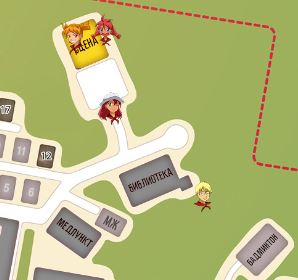
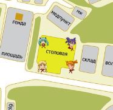
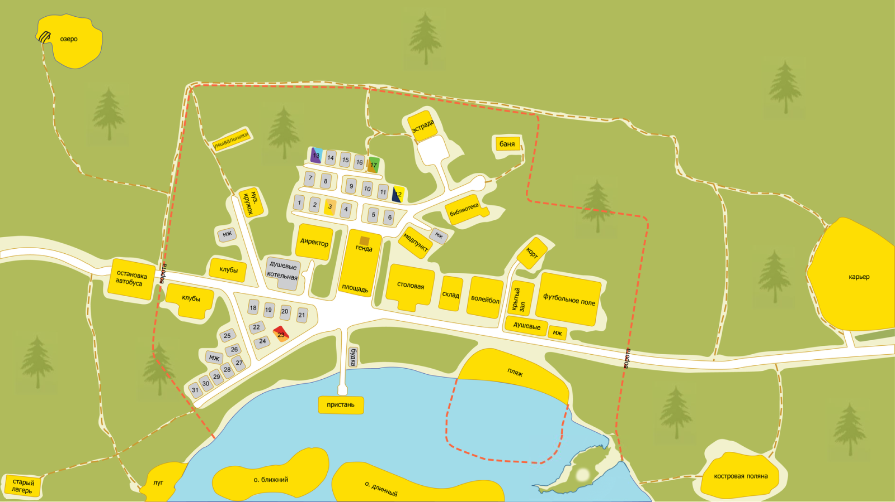
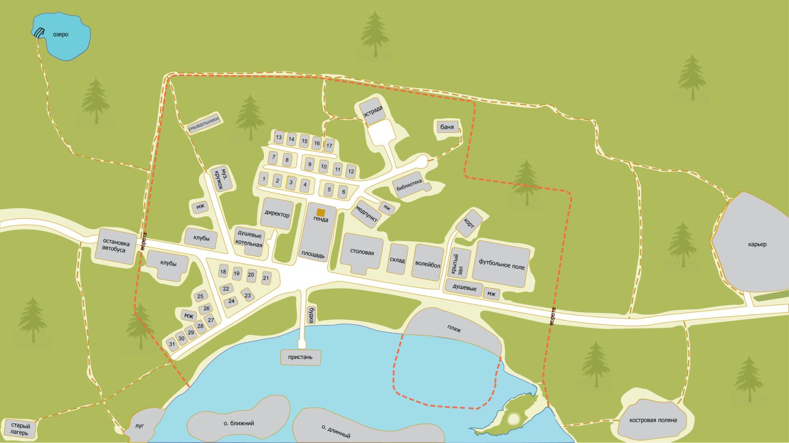
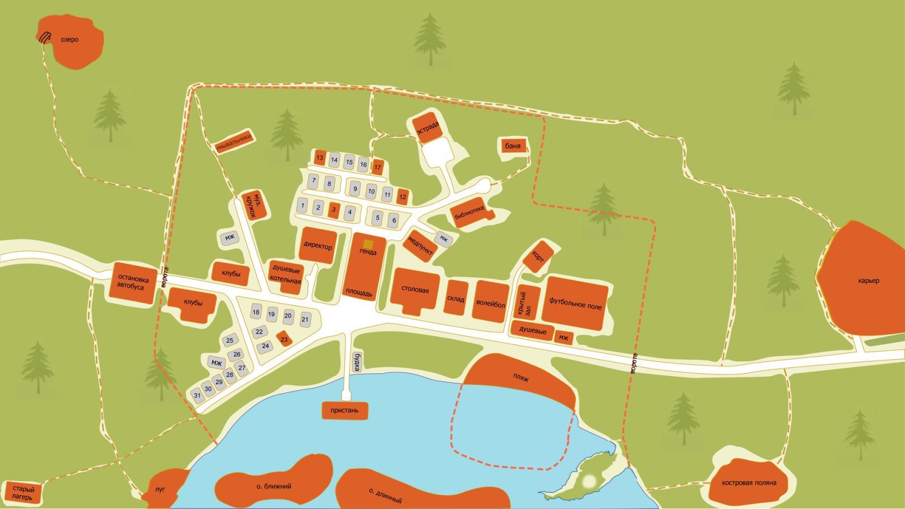
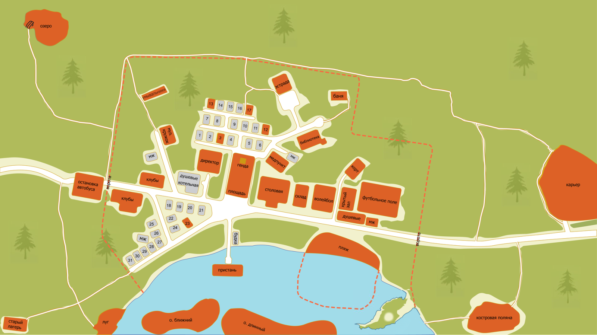
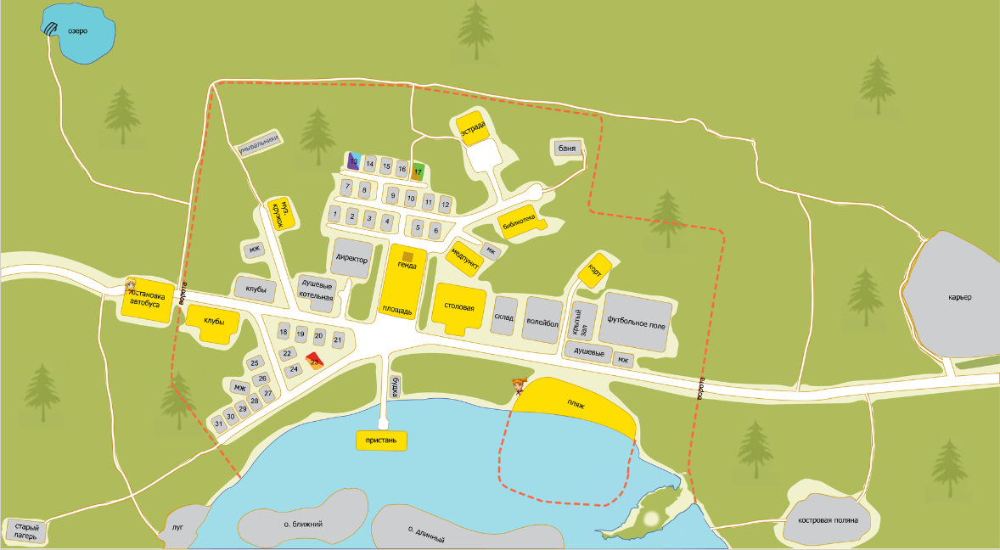

7дл-картооснова, разработка
Страница 5 из 5 •  1, 2, 3, 4, 5
1, 2, 3, 4, 5
Re: 7дл-картооснова, разработка
автор nuttyprof в Пн 27 Июл 2015 - 19:40
7dl-kun пишет:... а вот чибики пусть будут как есть, разве что если есть возможность масштабировать их программным способом, было бы здорово - а то они хорошо смотрятся на оригинальном масштабе, а в от на большой карте всё уже несколько грустнее.
Как выяснилось, чибики масштабированию (и прочим издевательствам) программным способом поддаются.
- Что можно с ними сделать:
Проверено и работает:
- увеличение/уменьшение;
- задание "прозрачности";
- "мигание" -да/нет (вариант - курсор не наведен - мигает, курсор навели - полупрозрачный и не мигает и т. п.)
- позиционирование относительно зон карты (в любое место зоны).
Предположительно (не знаю зачем, но ??)
- поворот вокруг оси;
- анимация;
- возможность вывести несколько чибиков в зону.
(например, на домик, скажем Алисы и Ульянки могут быть выведены программно два маленьких немигающих чибика, и третий - если кто-то из них в данный момент дома; или в одной локации два персонажа и т. д.)
Возникает вопрос: что из этого нужно (может, что-то нужно, что не перечислено) и как лучше это реализовать:
а) просто, но "дубово" - организуется однообразное применение неких эффектов ко всем чибикам на всех зонах (например: были большие и мигающие, стали - маленькие полупрозрачные немигающие);
б) чуть сложнее (нужные эффекты придется задавать в аргументах функции set_chibi(), возможно, приняв что-то по умолчанию), но поведение их станет более гибким: например, на домики выводим чибика с масштабом 0,5, на большие локации - с коэффициентом 0,7; возможно появление персонажа в двух зонах (надо угадать, где) - выводим в те две зоны чибиков полупрозрачных; на некоторых зонах сейчас (те же острова взять) - чибик в реке оказывается - для этой зоны можно задать его положение, отличное от дефолтного (верхний/левый угол зоны)... ну и т. д.
Реализация подписей зон пока зависла, пробую разыскать концы в ренпае.

nuttyprof- Хикка

- Сообщения : 102
Дата регистрации : 2015-05-25
Возраст : 45
Откуда : Юг
Re: 7дл-картооснова, разработка
автор 7dl-kun в Пн 27 Июл 2015 - 19:49
Хотя в идеале размещение чибика на случайной точке на карте тоже было бы неплохим подспорьем. Но они, как я понимаю, привязаны зонально, то есть, для каждой новой позиции придётся лепить новую зону, что не есть рентабельно.

7dl-kun- Находка для шпиона

- Сообщения : 3026
Дата регистрации : 2014-09-07
Откуда : здесь столько наркоманов?
Re: 7дл-картооснова, разработка
автор nuttyprof в Пн 27 Июл 2015 - 22:09
7dl-kun пишет:Из критичных только, пожалуй, масштабирование да размещение пары чибиков в одной локации.
- Масштабирование:
Масштабировать как? Если только масштаб и сразу всех:
(меняем в файле alt_res_map.rpy со строки 391 по 398 вызов чибика на карте _alt2 на этот:- Код:
if data["chibi"] != None:
chibi_scale = im.Scale(data["chibi"],40,40) # масштабируем картинку чибика до нужного размера (напр. 40х40 пикс)
ui.imagebutton(
anim.Blink(chibi_scale), #показываем с измененным размером
anim.Blink(chibi_scale),
clicked = renpy.curry(self.zoneclick)(name),
xpos = pos[0],
ypos = pos[1]
)
притом все чибики станут одинаковыми (сейчас чибики = 60х60, знак вопроса больше = 75х75, что ли);
размер, до которого масштабируется картинка, задается в пикселях (ххх, 40, 40), а картинка ужимается или расширяется до этого размера.
Если удобнее масштабировать кратно (не теряются относительные размеры чибиков),
меняем в этом коде im.Scale(data["chibi"],40,40) на im.FactorScale(data["chibi"], 0.6), здесь 0.6 - коэффициент масштабирования.
Если каждому свои свойства - посложнее, но тоже решаемо.
Два чибика - тут покумекать треба, может, придется переделать немного зоны, буду пробовать (задается два - а выводится только один пока, заданный последним, хотя и второй вроде есть, но невидим).
7dl-kun пишет:
Хотя в идеале размещение чибика на случайной точке на карте тоже было бы неплохим подспорьем. Но они, как я понимаю, привязаны зонально, то есть, для каждой новой позиции придётся лепить новую зону, что не есть рентабельно.
- В принципе. решаемо. Нужно техзадание:
Чибики суть кнопки (как и зоны), сейчас чибик привязывается к зоне (собственно, нужны координаты точки привязки на карте, а они в зоне есть; и метка перехода, которая задается в установке зоны), второй набор команд вывода "голого" чибика (их еще схоронять надо, иначе при загрузке сохранения могут "забыться") , только вместо ссылки на зону - либо прямые координаты на карте, либо какие-то заранее определенные точки привязки (для чибика две координаты нужны) - почти те же зоны; тут как удобнее будет.
И как они себя вести должны? Так понимаю - не для красоты, должны быть кликабельны - передаем еще метку перехода. Поведение - если не в фокусе - мигает, при получении фокуса (навели мыша) - ? (не мигает, поменял цвет/стал полупрозрачным/программно перекрасили).
nuttyprof- Хикка
- Сообщения : 102
Дата регистрации : 2015-05-25
Возраст : 45
Откуда : Юг
Re: 7дл-картооснова, разработка
автор nuttyprof в Вт 28 Июл 2015 - 22:50
- А самая мякотка в том, что:
использованы одинаковые наименование переменных, функций, блоков; на трезвую не понять, ну да пивом запасся , буду раскладывать, что куда и зачем. В разных уровнях вложенности и порядка вызова.
, буду раскладывать, что куда и зачем. В разных уровнях вложенности и порядка вызова.
То-то я голову ломал, чего бы вроде определенная уже переменная "не видится", а вызовешь вроде бы понятную функцию -она хорошо, если просто не работает. а зачастую - результат непредсказуем.
Последний раз редактировалось: nuttyprof (Вт 28 Июл 2015 - 23:22), всего редактировалось 1 раз(а)
nuttyprof- Хикка
- Сообщения : 102
Дата регистрации : 2015-05-25
Возраст : 45
Откуда : Юг
Re: 7дл-картооснова, разработка
автор 7dl-kun в Вт 28 Июл 2015 - 22:57
7dl-kun- Находка для шпиона
- Сообщения : 3026
Дата регистрации : 2014-09-07
Откуда : здесь столько наркоманов?
Re: 7дл-картооснова, разработка
автор nuttyprof в Пт 31 Июл 2015 - 18:18
- В процессе разборок с новыми картами обнаружилось:
Не будут работать с ними некоторые фильтры, которые обращались к store.map "классики" и ее свойствам
"Мне повезет" - точно работать не будет. Жалоб на это пока вроде бы не встречалось, в принципе - задача реализуемая, при такой уж необходимости.
nuttyprof- Хикка
- Сообщения : 102
Дата регистрации : 2015-05-25
Возраст : 45
Откуда : Юг
Re: 7дл-картооснова, разработка
автор nuttyprof в Вс 16 Авг 2015 - 3:27
7dl-kun пишет:Из критичных только, пожалуй, масштабирование да размещение пары чибиков в одной локации.
Хотя в идеале размещение чибика на случайной точке на карте тоже было бы неплохим подспорьем. Но они, как я понимаю, привязаны зонально, то есть, для каждой новой позиции придётся лепить новую зону, что не есть рентабельно.
Кое-что вырисовывается по чибикам.
Прежних чибиков и трогать не стал, на карте появятся новые сущности, со своими (+) и (-).
- Выглядеть это будет примерно так:



Чуть причешу код и в ближайшее время (день\два) выложу на "попробовать"
nuttyprof- Хикка
- Сообщения : 102
Дата регистрации : 2015-05-25
Возраст : 45
Откуда : Юг
Re: 7дл-картооснова, разработка
автор openplace в Вс 16 Авг 2015 - 16:23
+ лесные тропинки отдельным слоем. Теперь видны всегда при появлении большой карты. Или же, альтернатива: в имеющейся авторской версии (0.21c) можно поднять имеющийся слой тропинок чуть выше слоя, где изображено сооружение на озере, и тогда они будут видны на selected и bg тоже.
+ более привычный, классический (а-ля БЛ 1.1) цвет avaliable-объектов.
По шкале CMYK получившийся цвет такой (в %):
Циан (C - cyan) = 1.96
Розовый (M - magenta) = 8.24
Жёлтый (Y - yellow) = 98.43
Чёрный (K - key) = 0
Результат:
- avaliable:

- bg:

- selected:


openplace- Хикка
- Сообщения : 111
Дата регистрации : 2015-05-02
Re: 7дл-картооснова, разработка
автор 7dl-kun в Вс 16 Авг 2015 - 17:00
7dl-kun- Находка для шпиона
- Сообщения : 3026
Дата регистрации : 2014-09-07
Откуда : здесь столько наркоманов?
Re: 7дл-картооснова, разработка
автор XOLODOS в Вс 16 Авг 2015 - 17:02

XOLODOS- Сыч

- Сообщения : 66
Дата регистрации : 2015-07-31
Возраст : 24
Откуда : Россия, Смоленская обл. г.Починок
Re: 7дл-картооснова, разработка
автор openplace в Вс 16 Авг 2015 - 17:22
Ну, в общем-то, да, масло масленое получается при таком варианте. Был бы там сплошной лес и чуть светлее - они как-то смотрелись бы.7dl-kun пишет:Пунктир на тропинках? Хм. Сомнительно.
Как уже писал, самое оптимальное - в имеющемся (0.21c) варианте карты поднять слой тропинок наверх. Насколько я понял, он (этот слой) сейчас находится ниже слоёв inactive и selected и потому тропинки видны только в avaliable, и то не все. Это, в общем-то, совсем не критично, просто усилия и время были затрачены явно ведь не просто так. Если есть возможность - скиньте файл, где это всё находится, попробую поправить.
openplace- Хикка
- Сообщения : 111
Дата регистрации : 2015-05-02
Re: 7дл-картооснова, разработка
автор 7dl-kun в Вс 16 Авг 2015 - 17:29
…называется 7dl_avaliable.png и входит в состав последних билдов 7дл. (= Других нет, работал с этим.openplace пишет:файл, где это всё находится
7dl-kun- Находка для шпиона
- Сообщения : 3026
Дата регистрации : 2014-09-07
Откуда : здесь столько наркоманов?
Re: 7дл-картооснова, разработка
автор openplace в Вс 16 Авг 2015 - 18:05
Окей, будем что-то думать, есть пара идей, как сделать.7dl-kun пишет:…называется 7dl_avaliable.png и входит в состав последних билдов 7дл. (= Других нет, работал с этим.openplace пишет:файл, где это всё находится
openplace- Хикка
- Сообщения : 111
Дата регистрации : 2015-05-02
Re: 7дл-картооснова, разработка
автор openplace в Вс 16 Авг 2015 - 20:35
- bg:
- avaliable:
- selected:

В действии:
- Герк, 2-й день, вечер:

https://yadi.sk/d/RP9lOAaSiUcMt - все три здесь в 1920х1080.
openplace- Хикка
- Сообщения : 111
Дата регистрации : 2015-05-02
Re: 7дл-картооснова, разработка
автор nuttyprof в Пн 17 Авг 2015 - 15:26
Выкладываю тестовую версию обновленных карт.
БЛ 1.1; релиз 7дл - подойдет любой (от 020 и более поздние; лучше - 021.b, 021.c).
В архив включены новые картоосновы от openplace (http://bl7dl.2x2forum.ru/t110p105-topic#16060).
Архив тут: https://yadi.sk/d/OudJzKhyiVDnK
Распаковать, как всегда, с заменой файлов.
Старые сохранения - как всегда
- Что в архиве:
В архиве:
- новые картоосновы от openplace;
- измененный код карт alt_res_map.rpy;
- новая папка ~Test.
Чтобы не вносить изменения в ход игры тест карт производится отдельно.
Точка входа на тест - тоже отдельная, выбирается в модселекторе.
- Что изменилось на картах:
Как уже писал, чибиков не трогал, остались, как были.
Появились новые сущности; чтобы не возникало путаницы, обозвал их "куклами" (dolls).
Они похожи на чибиков, выглядят почти как чибики, ведут себя почти как чибики, но это не чибики.
Основное отличие кукол от чибиков (точнее, от зон карты, потому как чибики - это элемент зоны):
- зоны карты определены в своем словаре заранее, в блоке инициализации, добавили/убрали зону - начинаем игру с самого сначала;
- словарь (перечень) кукол инициализируется пустым, куклы могут быть добавлены в любом месте кода, по мере необходимости - можно будет использовать старые сохранения, если они сделаны до момента добавления куклы.
Еще есть отличие во внешнем виде и поведении:
- если кукла кликабельна, она, как и чибик, мигает;
- если кукла декоративная - не мигает;
- при наведении курсора на кликабельную куклу изображение прекращает мигать и слегка краснеет.
Можно сделать подобное и для чибиков.
Как и у всего, есть свои (+) и (-).
(+)
- Куклы никак не привязаны к зонам карты, их можно вывести в любое место карты, в любом количестве.
- Как и зоны карты, куклы могут быть кликабельны (клик = переход по метке), могут быть чисто декоративными (клик по картинке никаких действий не вызывает).
- Для кликабельных кукол поддерживается свойство been_there() (счетчик кликов).
(-)
- Для вывода куклы на карту нужно две команды 1) добавить куклу в словарь; 2) включить отображение куклы.
(Куклы в словарь добавляются неотображаемыми, сделано это для избежания интересного, но ненужного явления - одновременного отображения ВСЕХ имеющихся в словаре кукол (нужных по сюжету и ненужных), которое имело место быть в некоторых случаях.
- Если клики по нескольким куклам (или зоне+кукле) приводят на одну метку в игре - усложняется обработка been_there().
На самом деле been_there() считает не количество переходов на метку с зоны/куклы, но количество кликов по объекту. Поэтому считать клики по зоне, кукле (куклам, если их несколько) нужно отдельно - см. тест "большой" карты.
- Функции для работы с куклами в коде:
Для использования новых сущностей в коде игры предусмотрены следующие функции (приведены для "малой" карты; для большой - с заменой "_alt1" на "_alt2" :
- delete_all_dolls_alt1() - удаляет ВСЕХ кукол из словаря (использовать нужно осторожно, только при первоначальной инициализации карты);
- add_doll_alt1('name', [x,y], 'ch', zoom = 1.0, label='label', flipped=True) - добавляет новую куклу в словарь (или перезапишет - при совпадении имен)
где:
name - строка. Имя куклы - должно быть уникальным в пределах карты (по нему осуществляется хеширование словаря).
Имя может быть, в принципе, любой строкой (латинские буквы, подчеркивания и цифры).
[x,y] - x,y - целые числа. Координаты точки на карте, в которой будет отображаться наша кукла.
Особенность: картинка куклы "сажается" на указанную точку центром картинки!
'ch' - псевдоним картинки куклы, которая будет отображаться. То же, что при инициализации чибика (dv, un, mi, ..., ? и т. д.).
zoom = 1.0 (для малой карты), zoom = 0.7 (для большой карты). - необязательный параметр. -положительное число с точкой (real).
Если его не указывать, исходная картинка чибика будет выведена с масштабом "по умолчанию", который указан здесь.
Этот параметр нужно указывать, если нужно вывести чибика с масштабом большим или меньшим, чем "по умолчанию".
label='label' - необязательный параметр. - строка. Метка в коде, куда переходим после клика по кукле.
Если метку не задавать - кукла будет просто отображаться на карте, без интерактива.
flipped=True - необязательный параметр. Логический. Указывается, если нужно отобразить исходную картинку чибика, зеркально отраженную по вертикали.
например:
$ add_doll_alt1('dv_1370_504', [1370,504], 'dv', label='alt_test_map1_02')
'dv_1370_504' - имя куклы (понадобится нам в дальнейшем);
[1370,504] - будет выведена в точку с этими координатами;
'dv' - показана будет картинка Алисы;
label='alt_test_map1_02' - картинка кликабельна, по клику = переход на метку alt_test_map1_02.
$ add_doll_alt1('dv_756_486', [756,486], 'dv', flipped=True)
имя, координаты, картинка - аналогично;
метка не задана - кукла будет декоративной;
flipped=True - картинка будет "отзеркалена" по горизонтали.
$ add_doll_alt1('dv_1725_870', [1725,870], 'dv', zoom = 1.2, label='alt_test_map1_07')
имя, координаты, картинка, метка - аналогично;
zoom = 1.2 - исходная картинка будет выведена с масштабом 1.2 (больше, чем "по умолчанию" (1.0) для "малой" карты).
- delete_doll_alt1('name') - удаляет куклу с именем 'name' из словаря (использовать нужно осторожно, возможны нежелательные эффекты);
Если куклы в словаре нет - команда игнорируется.
- disable_all_dolls_alt1() - отключает ВСЕХ кукол на карте (куклы из словаря не удаляются);
Если словарь кукол пустой - команда игнорируется.
- disable_doll_alt1('name') - отключает куклу с именем 'name' на карте (кукла из словаря не удаляются);
Если куклы в словаре нет - команда игнорируется.
- disable_current_doll_alt1() - отключает ЭТУ куклу на карте (кукла из словаря не удаляются) - используется под меткой перехода по клику на кукле, если надо ее отключить;
- been_there_doll_alt1() - возвращает количество кликов по кукле (аналогично been_there для зон);
- set_doll_alt1('name') - включает отображение куклы с именем 'name' на карте;
Если куклы в словаре нет - команда игнорируется.
- set_all_dolls_alt1() - включает отображение ВСЕХ кукол на карте (использовать осторожно - будут включены действительно ВСЕ куклы в словаре, нужные нам и не нужные);
Если словарь кукол пустой - команда игнорируется.
Для добавления куклы на карту используется связка из двух функций:
например, добавляем одну куклу и показываем ее:
$ add_doll_alt1('dv_1370_504', [1370,504], 'dv', label='alt_test_map1_02')
$ set_doll_alt1('dv_1370_504')
добавляем несколько кукол в пустой словарь и показываем их всех:
$ add_doll_alt1('dv_1370_504',[1370,504],'dv', label='alt_test_map1_02')
$ add_doll_alt1('us_1495_514',[1495,514],'us', label='alt_test_map1_03')
$ add_doll_alt1('sl_1274_514',[1274,514],'sl', label='alt_test_map1_04')
........
$ set_all_dolls_alt1()
PS. Пытаюсь нечто подобное сделать и с дополнительными зонами карты (в смысле добавления "на лету", тут чуть сложнее будет - таки нужны изображения).
Как замена традиционного механизма - вряд ли, а вот если где-то надо что-то разово добавить на карту - КМК, самое то будет.
nuttyprof- Хикка
- Сообщения : 102
Дата регистрации : 2015-05-25
Возраст : 45
Откуда : Юг
openplace- Хикка
- Сообщения : 111
Дата регистрации : 2015-05-02
Re: 7дл-картооснова, разработка
автор nuttyprof в Ср 26 Авг 2015 - 15:49
Поиздевался над картами еще немного.
БЛ 1.1; релиз 7дл - подойдет любой (от 020 и более поздние; лучше - 021.b, 021.c).
К этому добавились новые сущности - "места" (area) - аналог зон карты, но определяемые в любом месте кода.
Архив тут: https://yadi.sk/d/FLCIj8MZifQtk
Распаковать с заменой файлов;
(если в папке "scenario_alt" от предыдущего теста осталась папка "~Test" - ее перед распаковкой удалить).
Старые сохранения - не работают, как всегда.
P.S. Я таки извиняюсь за качество картинок - художник из меня, мягко говоря, хреновый.
- Что в архиве:
В архиве:
- измененный код карт alt_res_map.rpy;
- папка ~Test;
- папка \scenario_alt\Pics\gui\extra_map_area (дополнительные картинки, необходимые для наших новых "мест").
Чтобы не вносить изменения в ход игры, тест карт производится отдельно.
Точка входа на тест - тоже отдельная, выбирается в модселекторе.
- Что изменилось на картах:
Прежние "зоны" карты я также не трогал, остались, как были.
Появились новые сущности; чтобы не возникало путаницы, обозвал их "местами" (areas).
Это почти те же зоны карты; немного расширен функционал, можно определять в любом месте кода.
И - нужны дополнительные изображения (поскольку что зоны, что "места" - суть графические кнопки).
Основное отличие "мест" от "зон" карты:
- "зоны" карты определены в своем словаре заранее, в блоке инициализации, добавили/убрали зону - начинаем игру с самого сначала;
- "место" можно определять "на лету", в любом месте кода, можно будет использовать старые сохранения, если они сделаны до момента добавления этого "места".
Есть свои (+) и (-).
(+)
- Новое "место" можно назначить в любом месте карты, они никак не привязаны к координатам зон.
- "Места" могут быть кликабельны (клик = переход по метке), могут быть чисто декоративными (клик по картинке никаких действий не вызывает).
- "Места" могут быть назначены "секретными" (внешний вид никак не изменяется при наведении мышки, но клик вызывает переход по метке в игре) и "секретными с подсказкой" - (по умолчанию "место" не выделено никак, при наведении мышки вид места изменяется, также кликабельно).
(-)
- Для вывода "места" на карту нужно две команды 1) добавить "место" в словарь; 2) включить отображение "места".
- Для назначения "места" (в большинстве случаев) понадобится два (для особых случаев - одно) дополнительных изображения.
- Функции для работы с "местами" в коде:
Для использования "мест" в коде игры предусмотрены следующие функции (приведены для "малой" карты; для большой - с заменой "_alt1" на "_alt2" :
- delete_all_areas_alt1() - удаляет ВСЕ "места" из словаря (использовать нужно осторожно, только при первоначальной инициализации карты);
- add_area_alt1('name', [x1,y1,x2,y2], idle = 'pics_idle', hover = 'pics_hover', overlay = [x,y,a,b], label='label') - добавляет новое "место" в словарь (или перезапишет - при совпадении имен)- Подробнее об этой команде и создаваемых "местах":
name - строка. Имя "места" - должно быть уникальным в пределах карты (по нему осуществляется хеширование словаря).
Имя может быть, в принципе, любой строкой (латинские буквы, подчеркивания и цифры).
[x1,y1,x2,y2] - целые числа. Координаты левого/верхнего и правого/нижнего углов "места" (как и у "зон" карты).
label='label' - необязательный параметр. - строка. Метка в коде, куда переходим после клика по "месту".
Если метку не задавать - "место" будет просто отображаться на карте, без интерактива.
Изображения, выводимые при включении "места":
idle = 'pics_idle' - необязательный параметр. - строка. "Псевдоним" картинки, которая показывается на включенном "месте", когда оно не в фокусе.
hover = 'pics_hover' - необязательный параметр. - строка. "Псевдоним" картинки, которая показывается на включенном "месте" при наведении курсора.
overlay = [x,y,a,b] - необязательный параметр. - целые числа. Для композитных изображений idle и hover.
x,y - смещение верхнего/левого угла накладываемого изображения от верхнего/левого угла места;
a,b - выводимый размер накладываемого изображения, до которого оно будет масштабироваться.
Варианты изображений, которые можно задавать для "мест":
(изображения нужно предварительно "объявить" - (image pics_idle = get_image_xx("path/file_name.png")) - без разницы: либо в блоке init, либо в коде перед созданием "места".
а) в стороннем редакторе "вырезаем" изображение из основы карты (map_bg.jpg - "малая" карта; 7dl_bg.png - "большая" карта) точно по координатам нашего "места" и вносим в вырезанные изображения нужные нам изменения (например, раскрашиваем соответствующими цветами: желтым для idle, оранжевым для hover).
Параметр overlay в этом случае не задаем.
б) создаем "накладываемые" изображения с прозрачным фоном (формат *.png), (размер создаваемых изображений значения не имеет, мы их будем масштабировать потом); программа сама "вырежет" кусок из основы карты с координатами нашего "места" и скомбинирует с "накладываемым" поверх основы изображением, смещение и масштаб "накладываемого" изображения задаются в параметре overlay = [x,y,a,b], который в этом случае указываем.
в) если нас устроят в качестве "накладываемых" изображений чибики - указываем в качестве источника картинок их (например, hover = 'un') и указываем overlay, механика вывода изображений - такая же, как в п. б); дополнительно "объявлять" чибиков не нужно.
Варианты отображаемых "мест" при различных сочетаниях задаваемых параметров:
а) НЕ задана label - в этом случае задаем только idle (hover, если задан - игнорируется) = "Декоративное место", некликабельное (при включении выводится просто дополнительное изображение на карту); если при этом задан overlay - изображение idle "накладывается" на карту.
Если НЕ задана метка и НЕ задан idle - команда будет проигнорирована.
б) задана label + НЕ задано idle + НЕ задано hover = "Секретное место без подсказок"; кликабельно, но, если даже включено, не выделяется никак - ни "по умолчанию", ни по наведении курсора.
в) задана label + НЕ задано idle + задано hover = "Секретное место с подсказкой"; кликабельно, при включении - "по умолчанию" не выделяется, при наведении курсора картинка меняется; если при этом задан overlay - изображение hover "накладывается" на карту.
г) задана label + задано idle + задано hover = "Стандартное место"; ведет себя, как обычная зона на карте; если при этом задан overlay - изображения idle и hover "накладывается" на карту.
Если задана метка, задан idle и НЕ задан hover - команда будет проигнорирована.
Если в качестве изображений заданы чибики и НЕ задан overlay - команда также будет проигнорирована.
- delete_area_alt1('name') - удаляет "место" с именем 'name' из словаря (использовать нужно осторожно, возможны нежелательные эффекты);
Если "места" в словаре нет - команда игнорируется.
- disable_all_areas_alt1() - отключает ВСЕ "места" на карте ("места" из словаря не удаляются);
Если словарь "места" пуст - команда игнорируется.
- disable_area_alt1('name') - отключает "место" с именем 'name' на карте ("место" из словаря не удаляется);
Если "места" в словаре нет - команда игнорируется.
- disable_current_area_alt1() - отключает ЭТО "место" на карте ("место" из словаря не удаляется);
Используется под меткой перехода по клику на "месте", если его нужно отключить.
- set_area_alt1('name') - включает "место" с именем 'name' на карте;
Поведение "места" определяется сочетанием параметров при создании "места" (см. выше).
Если "места" в словаре нет - команда игнорируется.
- set_area_chibi_alt1('name', 'ch') - включает чибика с именем 'ch' для уже включенного "места" с именем 'name';
Все аналогично чибикам для "зон" карты.
Если "места" в словаре нет или имени чибика нет в базе- команда игнорируется.
- reset_area_chibi_alt1('name') - отключает чибика для "места" с именем 'name';
Все аналогично чибикам для "зон" карты.
Если "места" в словаре нет - команда игнорируется.
- been_there_area_alt1() - возвращает количество кликов по "месту" (аналогично been_there для зон).
Для добавления и включения "места" нужно:
1. Определиться с изображениями для включаемого "места" (кроме "Секретного места без подсказки" или использования в качестве "накладываемых" изображений чибиков);
2. Объявить изображения, если они будут использоваться;
3. Добавить "место" в словарь: add_area_alt1 ('name', ....);
4. Включить "место" set_area_alt1('name').- Примеры:
"Стандартное место", картинки подготовлены во внешнем редакторе:- Код:
$ add_area_alt1('area_0_alt1', [769,343,881,457], idle = 'admin_avaliable', hover = 'admin_selected', label='alt_test_map1_00')
"Стандартное место", картинки комбинируются из подложки и "наложенных" изображений:- Код:
$ add_area_alt1('area_6_alt1', [950,335,1047,415], idle = 'hatch_closed', hover = 'hatch_open', overlay = [24,27,64,53], label='alt_test_map1_06')
"Секретное место с подсказкой", картинка hover подготовлена во внешнем редакторе:- Код:
$ add_area_alt1('area_2_alt1', [361,877,512,994], hover = 'shoe_sh', label='alt_test_map1_02')
"Секретное место с подсказкой", картинка hover комбинируется из подложки и "наложенного" изображения:- Код:
$ add_area_alt1('area_5_alt1', [1370,684,1496,842], hover = 'keychain', overlay = [50,60,60,54], label='alt_test_map1_05')
"Секретное место с подсказкой", картинка hover комбинируется из подложки и "наложенного" изображения, в качестве которого используется чибик:- Код:
$ add_area_alt1('area_7_2_alt1', [1348,379,1450,474], hover = 'un', overlay = [40,0,60,60], label='alt_test_map1_07_2')
"Секретное место без подсказки":- Код:
$ add_area_alt1('area_3_alt1', [213,981,350,1077], label='alt_test_map1_03')
"Декорация", картинка подготовлена во внешнем редакторе:- Код:
$ add_area_alt1('area_1_1_alt1', [210,602,319,738], idle = 'tree_1')
"Декорация", картинка комбинируется из подложки и "наложенного" изображения:- Код:
$ add_area_alt1('area_5_1_alt1', [282,500,411,570], idle = 'icarus_sideways', overlay = [0,15,126,40])
Как замена традиционного механизма "зон" - слишком громоздко, а вот для разовых или особенных случаев, думаю, может пригодиться.
nuttyprof- Хикка
- Сообщения : 102
Дата регистрации : 2015-05-25
Возраст : 45
Откуда : Юг
Re: 7дл-картооснова, разработка
автор openplace в Чт 27 Авг 2015 - 0:21
openplace- Хикка
- Сообщения : 111
Дата регистрации : 2015-05-02
Re: 7дл-картооснова, разработка
автор 7dl-kun в Чт 27 Авг 2015 - 0:41
7dl-kun- Находка для шпиона
- Сообщения : 3026
Дата регистрации : 2014-09-07
Откуда : здесь столько наркоманов?
Страница 5 из 5 • 1, 2, 3, 4, 5